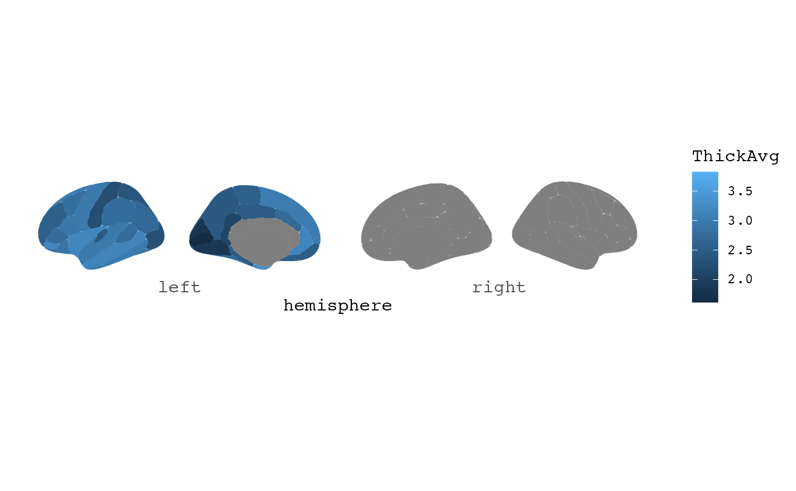
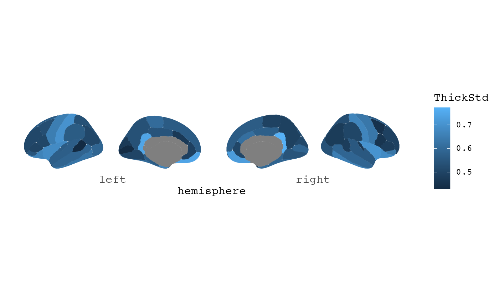
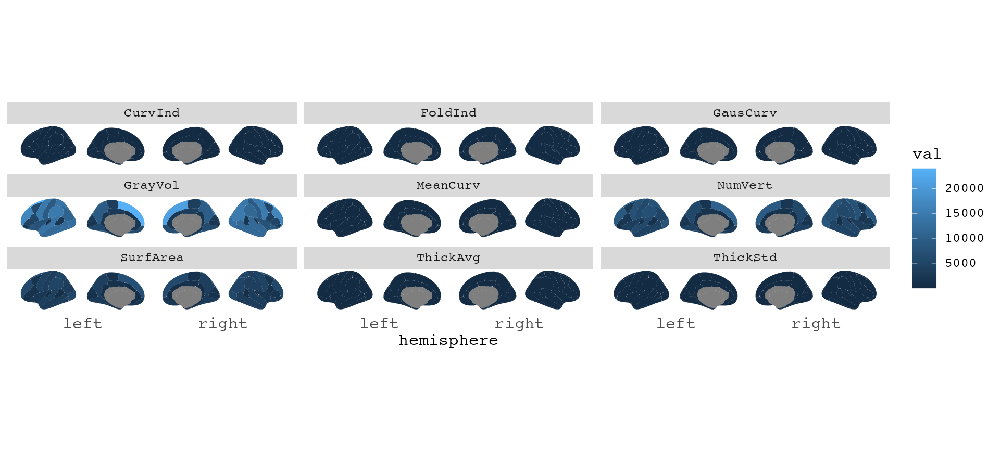
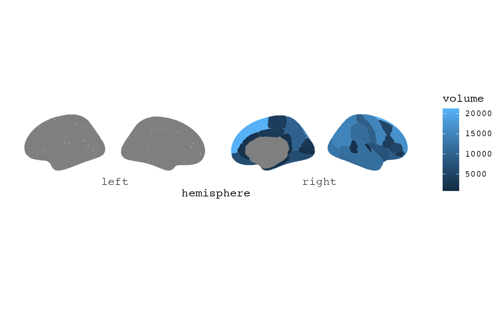

FreeSurfer already have files that are compatible with ggseg in some extent. There are naming conventions and file-formats that are different, and as such it can at times be a little tricky to get data directly from FreeSurfer into R, and subsequently plotting in ggseg.
If recon-all from FreeSurfer has been run, each participant should have a stats folder, with various parcellation data and summary statistics for those parcellations and measures. These have many header lines before the data actually start, and can have some formatting difficult to handle in R.
The function read_freesurfer_stats is made to easily read in raw stats tables from each individual, without needing to go through FreeSurfer’s internal converters. When using this file, remembering which hemisphere is read in is important, as this information must be added to the label column for ggseg to recognise the region labels.
stats_file <- file.path(subjects_dir, "bert/stats/lh.aparc.stats")
data <- read_freesurfer_stats(stats_file)
data
#> # A tibble: 34 × 10
#> label NumVert SurfArea GrayVol ThickAvg ThickStd MeanCurv GausCurv FoldInd
#> <chr> <int> <int> <int> <dbl> <dbl> <dbl> <dbl> <int>
#> 1 bankssts 1181 831 2297 2.77 0.428 0.116 0.024 11
#> 2 caudala… 843 572 1534 2.72 0.469 0.124 0.013 10
#> 3 caudalm… 2758 1840 5772 2.80 0.526 0.114 0.021 26
#> 4 cuneus 2683 1654 3074 1.81 0.471 0.14 0.033 39
#> 5 entorhi… 581 416 1840 3.33 0.667 0.116 0.032 5
#> 6 fusiform 4113 2875 8519 2.72 0.599 0.131 0.025 52
#> 7 inferio… 4948 3466 10559 2.70 0.509 0.131 0.029 65
#> 8 inferio… 5056 3542 12358 2.98 0.625 0.138 0.033 74
#> 9 isthmus… 1561 990 2350 2.09 0.745 0.113 0.023 19
#> 10 lateral… 7961 5077 12743 2.30 0.588 0.139 0.033 104
#> # … with 24 more rows, and 1 more variable: CurvInd <dbl>This data should be well-suited for use with ggseg.
data %>%
mutate(label = paste0("lh_", label)) %>%
ggseg(atlas = dk, mapping = aes(fill = ThickAvg))
#> merging atlas and data by 'label'
A convenience function also exists for those wanting to circumvent the aparcstats2table and asegstats2table from freesurfer for creating larger datasets of all subjects for a specific parcellation and metric. Using the function read_freesurfer_stats, read_atlas_files uses regular expression for the atlas you want to extract data from, and grabs this data from all available subjects. Be careful with your pattern matching to be sure you get exactly the atlas you want. For instance, there are several atlases with with string aparc in them. So in order to get only the default aparc stats, we need to specify aparc.stats$, which will only read those files ending with that particular string. This function can throw warnings, which is most cases can be ignored.
dat <- read_atlas_files(subject_dir, "aparc.stats$")
dat
#> # A tibble: 68 × 11
#> subject label NumVert SurfArea GrayVol ThickAvg ThickStd MeanCurv GausCurv
#> <chr> <chr> <int> <int> <int> <dbl> <dbl> <dbl> <dbl>
#> 1 bert lh_bank… 1181 831 2297 2.77 0.428 0.116 0.024
#> 2 bert lh_caud… 843 572 1534 2.72 0.469 0.124 0.013
#> 3 bert lh_caud… 2758 1840 5772 2.80 0.526 0.114 0.021
#> 4 bert lh_cune… 2683 1654 3074 1.81 0.471 0.14 0.033
#> 5 bert lh_ento… 581 416 1840 3.33 0.667 0.116 0.032
#> 6 bert lh_fusi… 4113 2875 8519 2.72 0.599 0.131 0.025
#> 7 bert lh_infe… 4948 3466 10559 2.70 0.509 0.131 0.029
#> 8 bert lh_infe… 5056 3542 12358 2.98 0.625 0.138 0.033
#> 9 bert lh_isth… 1561 990 2350 2.09 0.745 0.113 0.023
#> 10 bert lh_late… 7961 5077 12743 2.30 0.588 0.139 0.033
#> # … with 58 more rows, and 2 more variables: FoldInd <int>, CurvInd <dbl>Since all files are read in, the hemisphere in the label is already fixed, so it is easy to plot.

With this data, we can even have a look at all the metrics at once.
library(dplyr)
library(tidyr)
dat %>%
gather(stat, val, -subject, -label) %>%
group_by(stat) %>%
ggseg(mapping = aes(fill = val)) +
facet_wrap(~stat)
#> merging atlas and data by 'label'
FreeSurfer has internal functions to convert their raw stats files into tables, gather subject into a single data file with particular metric. It is quite common to use these files, but again the formatting is not something R is very happy with. The function read_freesurfer_table() is for easier import of these files, particularly for further plotting with ggseg.
# Path to our particular file, yours will be wherever you have saved it
table_path <- here::here("tests/testthat/data/aparc.volume.table")
table_path
#> [1] "/Users/runner/work/ggseg/ggseg/tests/testthat/data/aparc.volume.table"
read_freesurfer_table(table_path)
#> # A tibble: 36 × 3
#> subject label value
#> <chr> <chr> <dbl>
#> 1 bert rh_bankssts_volume 1969
#> 2 bert rh_caudalanteriorcingulate_volume 2280
#> 3 bert rh_caudalmiddlefrontal_volume 5390
#> 4 bert rh_cuneus_volume 2998
#> 5 bert rh_entorhinal_volume 1735
#> 6 bert rh_fusiform_volume 8144
#> 7 bert rh_inferiorparietal_volume 14876
#> 8 bert rh_inferiortemporal_volume 11016
#> 9 bert rh_isthmuscingulate_volume 1983
#> 10 bert rh_lateraloccipital_volume 12729
#> # … with 26 more rowsThe file is read and has three columns only. The subject column, the label column, and a column with the values of the metric. Since the stats tables can contain different measures, and these are handled somewhat differently, we for convenience leave the default reading of the table this way. To work with ggseg, though, the labels usually (but not always) need a little cleaning. In this case we read in a volume table, and as such all labels end with “_volume”. ggseg will not recognise this matching the atlas, and will therefore not plot.
Easiest way to clean, is by using the measure argument for the function.
dat <- read_freesurfer_table(table_path, measure = "volume")
dat
#> # A tibble: 36 × 3
#> subject label volume
#> <chr> <chr> <dbl>
#> 1 bert rh_bankssts 1969
#> 2 bert rh_caudalanteriorcingulate 2280
#> 3 bert rh_caudalmiddlefrontal 5390
#> 4 bert rh_cuneus 2998
#> 5 bert rh_entorhinal 1735
#> 6 bert rh_fusiform 8144
#> 7 bert rh_inferiorparietal 14876
#> 8 bert rh_inferiortemporal 11016
#> 9 bert rh_isthmuscingulate 1983
#> 10 bert rh_lateraloccipital 12729
#> # … with 26 more rowsThis will do two things: 1) remove the label suffix, and 2) rename the value column to the measure supplied. Alternatively, you will need to do string manipulation on the label column your self, we recommend the stringr package in that case.
An error will be thrown because the FreeSurfer tables also include measures of total volume/region/thickness, estimated intracranial volume etc, which will not merge into the atlas, and the internal ggseg atlas-merging function throws a warning. To avoid this, you can remove those labels before plotting.
dat %>%
filter(grepl("lh|rh", label)) %>%
ggseg(mapping = aes(fill = volume))
#> merging atlas and data by 'label'